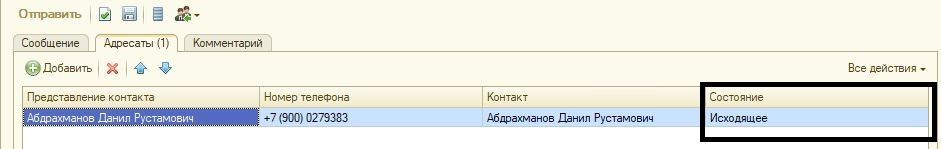

Сообщения SMS
Документ предназначен для отправки сообщения SMS одному или нескольким адресатам, проведения SMS-рассылки и последующего отражения факта отправки сообщений.
Документ позволяет создавать, редактировать и отправлять сообщения SMS, помимо их документирования и хранения. Возможна отправка нескольких сообщений с одинаковым текстом разным адресатам посредством одного документа. При этом отслеживается как состояние документа в целом, так и состояния отдельного сообщения каждому из различных адресатов в рамках документа.
Создание сообщения
Создание нового документа осуществляется по кнопке
В открывшейся форме документа имеютя следующие вкладки:
Вкладка "Сообщение" – вводится текст, который будет отправлен всем указанным адресатам. Программа производит подсчет букв введенного текста и указывает количество оставшихся символов до конца сообщения по правилам, принятым всеми провайдерами, в случае превышения размера одного сообщения текст автоматически разбивается на несколько отдельных сообщений sms.
В сообщениях, сформированных автоматически системой при выполнении регламентных заданий:
SMS-информирование о возврате из чистки
SMS-информирование о получении средств защиты
SMS-информирование о поступлении средств защиты на склад
текст сообщения будет указан тот, который будет задан в «Шаблоне сообщения» (настраивается в карточке организации на вкладке «Информирование сотрудников»
Вкладка "Адресаты"
• Информация об адресатах сообщения вводится в список Адресаты.
• С помощью кнопки Добавить можно указать один или несколько контактов.
• Контакты являются обязательным для заполнения элементом.
• Если адресат уже зарегистрирован в информационной базе, то информация о нем указывается в поле Контакт. Укажите контакт, используя список «Выбор контакта»-вкладка «Физические лица».
В этом случае после выбора физического лица остальные поля заполняются автоматически в табличной части документа
• Номер телефона должен быть указан в формате +7 (xxx) xxxxxxx, указывается в справочнике "Физические лица". Является обязательным для заполнения.
• Если это новый адресат, то непосредственно из окна документа его можно зарегистрировать, нажав  . Создается физическое лицо и вносится в него данные нового адресата.
. Создается физическое лицо и вносится в него данные нового адресата.
Вкладка "Комментарий" - произвольный текстовый комментарий.
В сообщениях sms, сформированных автоматически при выполнении регламентного задания «SMS-информирование о получении средств защиты» выводится комментарий по месяцу сформированной потребности и организации
Отправка сообщений
С помощью кнопки Отправить инициируется отправка, сообщение переходит из состояния «Черновик» в состояние «Исходящее».

Непосредственная отправка выполняется в фоне регламентным заданием "Отправка SMS" по настроенному расписанию.
Если необходимо отправить сообщения SMS не дожидаясь отработки регламентного задания (т.е. внепланово) необходимо в списке документов Сообщения SMS нажать на кнопку «Отправить сейчас». Данная кнопка запускает выполнение регламентного задания в фоновом режиме.
Проверка текущего состояния сообщения SMS
• Состояние доставки сообщений проверяется автоматически, в соответствии с расписанием регламентного задания «Обновление статусов доставки SMS», настроенным администратором программы.
• Состояние SMS-сообщений отражается внизу документа и в таблице адресатов в колонке Состояние сообщения по каждому контакту отдельно.

• Состояние сообщения конкретному адресату отображается в табличной части Адресаты. Может принимать одно из следующих значений:
o Черновик - сообщение еще отправлялось и может быть отредактировано.
o Исходящее - пользователь уже отправил сообщение, но оно еще не передавалось провайдеру.
o Не удалось передать провайдеру - программа пыталась передать сообщение провайдеру, но не смогла этого сделать. Например, возникли технические проблемы на стороне провайдера.
o Не отправлено провайдером - сообщение успешно передано провайдеру, но еще не было им обработано.
o Отправляется провайдером - сообщение в данный момент отправляется провайдером.
o Отправлено провайдером - сообщение отправлено провайдером, состояние доставки на данный момент не известно.
o Доставлено - сообщение успешно доставлено адресату.
o Не доставлено - сообщение не удалось доставить адресату. Дальнейших попыток доставки сообщения не будет.
o Не опознано провайдером - провайдер не опознал, что когда то принимал данное сообщение к доставке.
o Ошибка получения статуса у провайдера - не удалось связаться с провайдером при попытке получения состояния сообщения.
• Состояние документа в целом отображается в нижней левой части окна документа. Может принимать одно из следующих значений.
o Черновик - сообщение не отправлялось и доступно для редактирования.
o Исходящее - пользователь уже отправил сообщение, но оно еще не передавалось провайдеру.
o Доставляется - все сообщения переданы провайдеру и хотя бы по одному из них не закончена доставка до адресата.
o Доставлено - все сообщения успешно доставлены адресатам.
o Частично доставлено - доставка сообщений прекращено, часть сообщений доставлены адресатам, часть нет.
o Не доставлено.